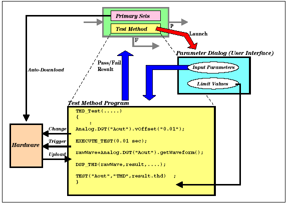

Test Method Program Introduction
The SmarTest software supplies a variety of customized functions that are extensions of the standard C++ programming language for programming operations such as the following:
- Measure the output signal from a test device
- Retrieve the measured data
- Analyze the measured data
- Judge the calculated result as pass/fail
The customized functions are "test method API" or called "test method APIs". For programming steps using the test method APIs, see the chapter Test Method Programming Essentials.
In the Testflow Editor, you can set up a test suite using a test method program developed by you. That is, in the Test Suites page of the Testflow Editor, you can select the desired test method program and the primaries (timing/level-related primaries, primary analog set, and start label) from those you have prepared.
When a testflow is executed, all setup files specified as primary settings in the Testflow Editor are downloaded to the tester hardware automatically. In each test suite, the primaries specified in the Test Suites page of the Testflow Editor will be automatically set at the beginning of the test suite execution. Therefore, you do not have to describe the APIs that define the primaries in the test method program. You can change the primaries or parts of them using the test method APIs.
If you change any of them in your test method program, an API for test execution (for example, EXECUTE_TEST API) will reflect the changes. After that, this API activates the primaries into the tester hardware, and executes the test.
For transferring some input parameters and test limit values to a test method program, you can enter these values in the Properties view according to your needs.
The test method program in a test suite returns a pass or fail of the test suite to the Testflow according to the judgment results of the tests executed in the test method program. Hence, the testflow branches according to the judgment results if the test suite is "Run & Branch" type.
